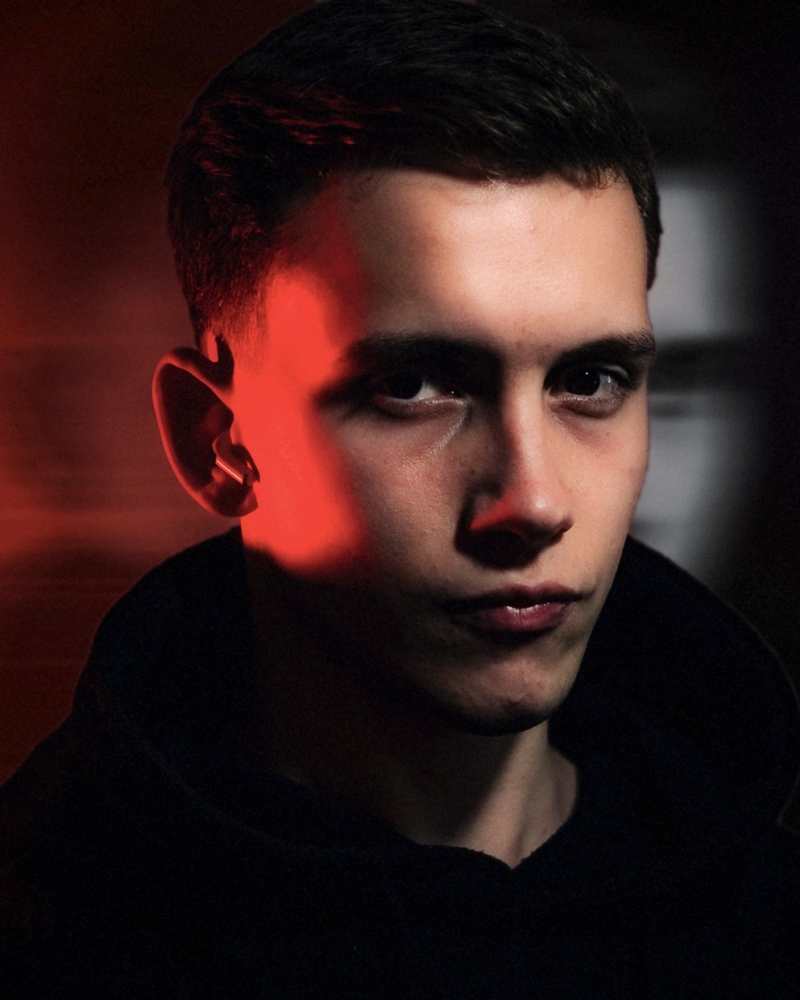

Editor de vídeos curtos/Curitiba, PR
Edito vídeos verticais para criadores, canais de esporte e artistas da música. Gancho primeiro, legenda limpa, motion só quando ajuda. Você manda o bruto e recebe o arquivo pronto para postar, normalmente em até 72 horas.
Cortes verticais entregues para canais de verdade. Abra um quadro para assistir com som. Cada um diz o que eu recebi e o que saiu.
Cortar um vídeo, qualquer um corta. O trabalho é decidir o que os dois primeiros segundos prometem, onde o corte cai na batida e o que sai para a parte boa respirar.
02 — A diferença está na ediçãoPadrão por corte. Entra o bruto, sai pronto para postar.
Pacotes mensais de 15, 30 ou 45 cortes, numa planilha que você acompanha.
Já está no preço. Ajuste faz parte do trabalho, não é discussão.
Vertical, pronto para Reels, TikTok e Shorts.
Sem terceirizar. Feito para agências e criadores que precisam de volume sem ficar em cima do editor.

Coloque o material numa pasta compartilhada do Drive. Você recebe os verticais prontos para postar, com legenda, sound design e cor.
Edito e legendo nos dois idiomas. Nesta página tem corte em inglês, para canais do Reino Unido, e em português.
Ajuste faz parte do preço, não é discussão. Uma planilha mostra o andamento de cada corte.
Edição no Premiere, cor no DaVinci Resolve e motion no After Effects quando o vídeo pede mais do que corte seco.
O jeito mais rápido de saber se eu sou o seu editor é ver o seu próprio conteúdo editado por mim. Sem compromisso. Se gostar, a gente conversa sobre volume.